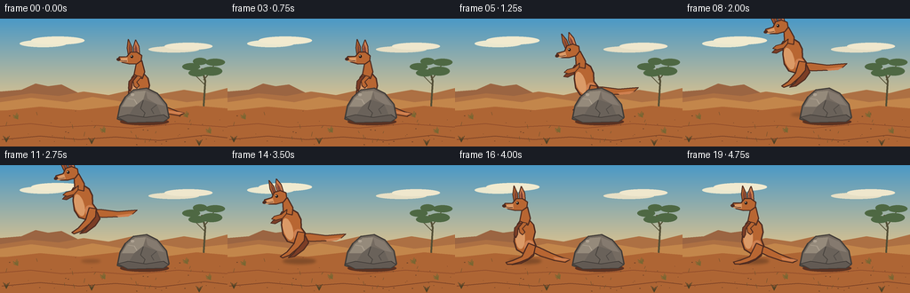
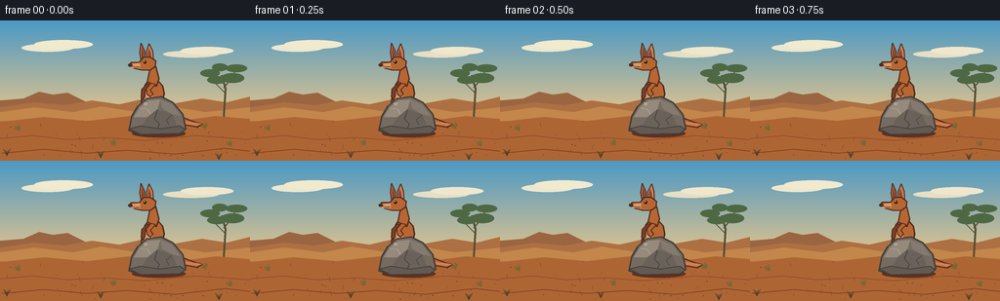
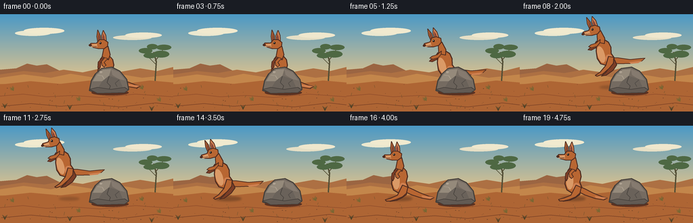

CODING AGENTS AS PIXEL WORLD MODELS
traex/GPT-5.6-Sol · dynamic_spatial_relationship_0035
点击播放 · 原生 RGB 像素
逐轮保存的候选
回放视频、检查图与代码变化。
每份候选均可单独播放。实际图片检查记录在下方工具轨迹中。
候选 01播放与检查图
点击播放 · 原生 RGB 像素


展开代码变化
--- 上一保存版本
+++ 本次保存版本
@@ -0,0 +1,246 @@
+from pathlib import Path
+import math
+import numpy as np
+from PIL import Image, ImageDraw, ImageFilter
+import artifact_io
+
+# PixelWorld case: procedural, deterministic, 4x supersampled vector animation.
+W, H, N = 256, 144, 20
+S = 4
+rng = np.random.default_rng(3501)
+
+def C(c):
+ return c
+
+def scpt(p):
+ return tuple(int(round(v*S)) for v in p)
+
+def polygon(d, pts, fill, outline=None, width=1):
+ q = [scpt(p) for p in pts]
+ d.polygon(q, fill=fill)
+ if outline:
+ d.line(q + [q[0]], fill=outline, width=max(1,int(width*S)), joint='curve')
+
+def line(d, pts, fill, width=1):
+ d.line([scpt(p) for p in pts], fill=fill, width=max(1,int(width*S)), joint='curve')
+
+def ellipse(d, box, fill, outline=None, width=1):
+ b = tuple(int(round(v*S)) for v in box)
+ d.ellipse(b, fill=fill, outline=outline, width=max(1,int(width*S)) if outline else 1)
+
+def build_background():
+ # Fine gradient made at output resolution, then enlarged for detailed overlays.
+ arr = np.zeros((H*S, W*S, 3), dtype=np.uint8)
+ top = np.array([75, 153, 198.])
+ horizon = np.array([223, 195, 141.])
+ ground_top = np.array([189, 119, 60.])
+ ground_bottom = np.array([132, 69, 37.])
+ horizon_y = int(96*S)
+ for yy in range(H*S):
+ if yy < horizon_y:
+ t = yy/max(1,horizon_y-1)
+ col = top*(1-t)+horizon*t
+ else:
+ t = (yy-horizon_y)/max(1,H*S-horizon_y-1)
+ col = ground_top*(1-t)+ground_bottom*t
+ arr[yy,:,:] = np.clip(col,0,255).astype(np.uint8)
+ im = Image.fromarray(arr, 'RGB')
+ d = ImageDraw.Draw(im)
+ # Soft high clouds.
+ for box, color in [((22,24,75,32),(235,232,207)), ((35,20,95,29),(241,234,207)),
+ ((167,31,224,38),(230,223,197)), ((185,27,239,35),(239,231,205))]:
+ ellipse(d, box, color)
+ # Distant ochre mesas and ridges create depth.
+ polygon(d, [(0,82),(24,80),(40,73),(54,76),(69,74),(87,83),(111,86),(111,99),(0,99)], (155,101,66))
+ polygon(d, [(0,89),(35,84),(66,87),(94,82),(122,86),(149,80),(179,85),(207,80),(232,84),(256,78),(256,101),(0,101)], (173,112,67))
+ polygon(d, [(0,94),(35,89),(75,94),(104,88),(141,94),(174,88),(210,94),(256,89),(256,103),(0,103)], (195,134,75))
+ # Far eucalyptus silhouette on the right.
+ line(d, [(229,101),(231,70),(227,56)], (83,78,53), 2.2)
+ line(d, [(230,74),(220,64),(217,55)], (83,78,53), 1.3)
+ line(d, [(229,69),(239,57),(241,49)], (83,78,53), 1.3)
+ for cx,cy,rx,ry in [(215,54,10,4),(222,61,10,4),(242,49,11,4),(238,59,12,5),(225,48,8,4)]:
+ ellipse(d,(cx-rx,cy-ry,cx+rx,cy+ry),(78,104,67))
+ # Ground bands and sandy contour lines.
+ polygon(d, [(0,104),(45,99),(89,103),(133,98),(184,103),(221,98),(256,101),(256,144),(0,144)], (174,101,52))
+ line(d, [(0,121),(34,118),(69,122),(108,120),(148,123),(200,118),(256,122)], (145,77,43), 1)
+ line(d, [(2,136),(45,132),(89,136),(130,133),(179,137),(230,131),(256,134)], (122,65,38), 1)
+ # Tufts and pebbles kept subtle so the subjects remain dominant.
+ rr = np.random.default_rng(84)
+ for _ in range(54):
+ x=float(rr.uniform(1,255)); y=float(rr.uniform(103,142))
+ if rr.random()<.33:
+ col=(111,82,45)
+ line(d,[(x,y),(x+rr.uniform(-2,2),y-rr.uniform(2,5))],col,.55)
+ else:
+ r=float(rr.uniform(.25,.75))
+ ellipse(d,(x-r,y-r*.55,x+r,y+r*.55),(113,68,40))
+ # A few golden spinifex clumps.
+ for cx,cy in [(20,113),(211,111),(237,129),(118,128)]:
+ for j in range(7):
+ ang=-2.85+j*.22
+ length=5+(j%3)
+ line(d,[(cx,cy),(cx+math.cos(ang)*length,cy+math.sin(ang)*length)],(121,102,50),.8)
+ return im
+
+BG = build_background()
+
+def transform(points, x, y, scale, angle=0, sy=1.0):
+ ca,sa=math.cos(angle),math.sin(angle)
+ out=[]
+ for px,py in points:
+ py*=sy
+ out.append((x+scale*(px*ca-py*sa), y+scale*(px*sa+py*ca)))
+ return out
+
+def tpoly(d, pts, x,y,s,a,sy, fill, outline='#4b2a1c', width=1.2):
+ polygon(d, transform(pts,x,y,s,a,sy), fill, outline, width)
+
+def tellipse(d, center, rx,ry,x,y,s,a,sy,fill,outline=None,width=1):
+ # Polygonal ellipse supports rotation with the rest of the animal.
+ pts=[]
+ for k in range(32):
+ q=2*math.pi*k/32
+ pts.append((center[0]+rx*math.cos(q),center[1]+ry*math.sin(q)))
+ polygon(d,transform(pts,x,y,s,a,sy),fill,outline,width)
+
+def draw_kangaroo(im, x, ground, mode, phase=0.0):
+ d=ImageDraw.Draw(im)
+ fur='#b86632'; fur_hi='#cf8050'; fur_light='#db9a67'; dark='#4d2b20'; shadow='#7c3e26'
+ if mode=='jump':
+ s=.70; a=math.radians(-16); sy=1.0
+ elif mode=='crouch':
+ s=.70; a=math.radians(-4); sy=.84
+ elif mode=='land':
+ s=.70; a=math.radians(-5); sy=.86
+ else:
+ s=.70; a=math.radians(-1.5+1.0*math.sin(phase)); sy=1.0
+
+ # Tail behind the body; broad at the rump and tapering naturally.
+ tail=[(8,-32),(23,-26),(42,-16),(61,-8),(72,-5),(64,-1),(47,-4),(25,-12),(7,-21)]
+ if mode=='jump': tail=[(8,-31),(26,-25),(49,-15),(70,-11),(80,-9),(72,-5),(47,-7),(23,-13),(7,-21)]
+ tpoly(d,tail,x,ground,s,a,sy,fur,dark,1.3)
+ tpoly(d,[(45,-10),(65,-7),(72,-5),(63,-3),(48,-6)],x,ground,s,a,sy,fur_hi,None,0)
+
+ # Far hind leg.
+ if mode=='jump':
+ farleg=[(5,-31),(17,-24),(19,-12),(8,-3),(-9,3),(-19,2),(-9,-2),(5,-13)]
+ else:
+ farleg=[(5,-31),(16,-24),(14,-13),(4,-6),(-7,-1),(-21,1),(-25,-2),(-10,-7),(0,-15)]
+ tpoly(d,farleg,x,ground,s,a,sy,shadow,dark,1.25)
+
+ # Pear-shaped torso with the characteristic heavy haunch.
+ body=[(7,-72),(15,-63),(17,-51),(14,-39),(18,-28),(11,-18),(-2,-16),(-13,-23),(-17,-36),(-15,-51),(-10,-65),(-5,-72)]
+ tpoly(d,body,x,ground,s,a,sy,fur,dark,1.5)
+ tellipse(d,(-7,-42),7.5,18,x,ground,s,a,sy,fur_light,None)
+ # Haunch highlight.
+ tellipse(d,(7,-28),8,10,x,ground,s,a,sy,fur_hi,None)
+
+ # Near hind leg, pose changes strongly in flight.
+ if mode=='jump':
+ leg=[(7,-34),(17,-29),(13,-17),(1,-9),(-16,-1),(-28,0),(-31,-3),(-19,-7),(-4,-17)]
+ elif mode in ('crouch','land'):
+ leg=[(6,-33),(18,-27),(13,-17),(-1,-10),(-17,-5),(-28,-4),(-31,-7),(-18,-10),(-2,-19)]
+ else:
+ leg=[(6,-33),(17,-28),(14,-16),(5,-8),(-8,-3),(-21,0),(-29,0),(-31,-3),(-20,-6),(-5,-12)]
+ tpoly(d,leg,x,ground,s,a,sy,fur,dark,1.4)
+ # Black/dark toe tip.
+ toe=leg[-4:-1] if len(leg)>6 else leg
+ # Neck.
+ tpoly(d,[(-7,-69),(-3,-87),(6,-91),(10,-73),(6,-62)],x,ground,s,a,sy,fur,dark,1.3)
+
+ # Far forearm.
+ if mode=='jump':
+ arm1=[(-7,-65),(-15,-58),(-25,-56),(-31,-59),(-26,-62),(-16,-65),(-8,-72)]
+ arm2=[(-3,-66),(-11,-61),(-22,-61),(-28,-65),(-22,-68),(-11,-68),(0,-73)]
+ else:
+ arm1=[(-8,-66),(-16,-58),(-17,-47),(-14,-42),(-11,-48),(-10,-57),(-3,-65)]
+ arm2=[(-2,-67),(-9,-59),(-8,-51),(-3,-47),(1,-51),(-3,-57),(5,-65)]
+ tpoly(d,arm1,x,ground,s,a,sy,shadow,dark,1.15)
+ tpoly(d,arm2,x,ground,s,a,sy,fur,dark,1.15)
+
+ # Ears behind head. One ear twitches subtly while waiting.
+ twitch=2.0*math.sin(phase*2.0) if mode=='stand' else 0
+ ear_far=[(-5,-91),(-7,-113),(-3+twitch,-125),(2,-114),(3,-92)]
+ ear_near=[(-14,-91),(-17,-112),(-15,-126),(-10,-114),(-8,-92)]
+ tpoly(d,ear_far,x,ground,s,a,sy,fur_hi,dark,1.2)
+ tpoly(d,ear_near,x,ground,s,a,sy,fur,dark,1.2)
+ tpoly(d,[(-14,-95),(-14.5,-112),(-13.5,-119),(-11.5,-112),(-10.5,-95)],x,ground,s,a,sy,'#7e4434',None,0)
+ tpoly(d,[(-4,-95),(-5,-111),(-3.5,-118),(-1,-111),(0,-94)],x,ground,s,a,sy,'#874638',None,0)
+
+ # Long muzzle and head.
+ head=[(-18,-98),(-12,-105),(-2,-105),(6,-99),(5,-91),(-2,-86),(-14,-86),(-25,-89),(-33,-94),(-30,-98)]
+ tpoly(d,head,x,ground,s,a,sy,fur,dark,1.4)
+ tpoly(d,[(-17,-97),(-26,-96),(-33,-94),(-29,-90),(-17,-89)],x,ground,s,a,sy,fur_light,None,0)
+ # Nose, eye and brow, positioned via transformed centers.
+ tellipse(d,(-31.5,-94),3.2,2.5,x,ground,s,a,sy,dark,None)
+ tellipse(d,(-10,-98),2.2,2.4,x,ground,s,a,sy,'#241a18',None)
+ tellipse(d,(-10.6,-99),.65,.7,x,ground,s,a,sy,'#f5e9c8',None)
+ # Mouth stroke.
+ p=transform([(-31,-93),(-23,-91),(-18,-91)],x,ground,s,a,sy)
+ line(d,p,dark,.75)
+
+
+def draw_shadow(im, x, altitude, jumping):
+ d=ImageDraw.Draw(im)
+ # Higher animal -> smaller and softer shadow.
+ shrink=max(.42,1-altitude/75)
+ rx=(18 if not jumping else 22)*shrink
+ layer=Image.new('RGBA',im.size,(0,0,0,0)); ld=ImageDraw.Draw(layer)
+ ellipse(ld,(x-rx,108-rx*.16,x+rx,108+rx*.16),(55,35,23,95 if altitude<20 else 65))
+ layer=layer.filter(ImageFilter.GaussianBlur(int(1.6*S)))
+ im.paste(layer,(0,0),layer)
+
+def draw_rock(im):
+ d=ImageDraw.Draw(im)
+ # Main rock is foreground and intentionally occludes the initial kangaroo.
+ rock=[(132,113),(135,98),(141,88),(150,80),(165,78),(177,84),(187,96),(190,111),(184,116),(144,117)]
+ polygon(d,rock,'#756b61','#413c38',1.6)
+ polygon(d,[(137,99),(143,89),(152,82),(164,81),(161,91),(151,99)],'#958a7b',None)
+ polygon(d,[(164,81),(176,86),(185,98),(176,96),(166,90)],'#857a6f',None)
+ polygon(d,[(151,99),(161,91),(176,96),(183,112),(165,114),(143,112)],'#6a625a',None)
+ # Facets and cracks reinforce rock identity rather than a generic blob.
+ line(d,[(161,92),(158,101),(163,106),(160,114)],'#49443f',1.1)
+ line(d,[(176,97),(170,102),(173,107)],'#514b46',.85)
+ line(d,[(144,90),(151,91),(154,96)],'#b0a493',.8)
+ ellipse(d,(147,84,151,87),'#aea292')
+ # Contact shadow at base.
+ ellipse(d,(135,112,190,120),(91,50,34))
+ # Redraw lower face over base shadow.
+ polygon(d,[(132,111),(144,108),(164,111),(184,108),(190,112),(184,116),(144,117)],'#625a53','#413c38',1)
+
+
+def make_frame(i):
+ im=BG.copy()
+ # Tiny atmospheric shimmer is absent: stable background improves motion readability.
+ if i <= 3:
+ mode='stand'; x=157.0; ground=111.0; altitude=0; phase=i*.45
+ elif i==4:
+ mode='crouch'; x=155.0; ground=112.0; altitude=0; phase=0
+ elif 5 <= i <= 14:
+ p=(i-4)/11.0
+ # Ease leftward travel, with a high readable jump arc.
+ ease=p*p*(3-2*p)
+ x=156+(79-156)*ease
+ altitude=43*math.sin(math.pi*p)
+ ground=111-altitude
+ mode='jump'; phase=p
+ elif i==15:
+ mode='land'; x=79; ground=112; altitude=0; phase=0
+ else:
+ mode='stand'; x=79; ground=111; altitude=0; phase=(i-16)*.38
+
+ draw_shadow(im,x,altitude,mode=='jump')
+ # Kangaroo is painted first: while aligned with the rock, the rock is visibly in front.
+ draw_kangaroo(im,x,ground,mode,phase)
+ draw_rock(im)
+
+ # Foreground grass overlaps both for scene integration.
+ d=ImageDraw.Draw(im)
+ for cx,cy in [(7,139),(103,141),(224,143)]:
+ for j in range(5):
+ line(d,[(cx,cy),(cx+(j-2)*1.8,cy-5-abs(j-2))],(77,65,38),.75)
+ return np.asarray(im.resize((W,H),Image.Resampling.LANCZOS),dtype=np.uint8)
+
+frames=np.stack([make_frame(i) for i in range(N)],axis=0)
+assert frames.shape==(20,144,256,3) and frames.dtype==np.uint8
+artifact_io.save(frames,Path(__file__).resolve().parent)
候选 02播放与检查图
点击播放 · 原生 RGB 像素

展开代码变化
--- 上一保存版本
+++ 本次保存版本
@@ -44,7 +44,7 @@
t = (yy-horizon_y)/max(1,H*S-horizon_y-1)
col = ground_top*(1-t)+ground_bottom*t
arr[yy,:,:] = np.clip(col,0,255).astype(np.uint8)
- im = Image.fromarray(arr, 'RGB')
+ im = Image.fromarray(arr)
d = ImageDraw.Draw(im)
# Soft high clouds.
for box, color in [((22,24,75,32),(235,232,207)), ((35,20,95,29),(241,234,207)),
@@ -221,7 +221,8 @@
# Ease leftward travel, with a high readable jump arc.
ease=p*p*(3-2*p)
x=156+(79-156)*ease
- altitude=43*math.sin(math.pi*p)
+ # Keep the full ear silhouette inside frame while retaining a strong arc.
+ altitude=27*math.sin(math.pi*p)
ground=111-altitude
mode='jump'; phase=p
elif i==15:
可观测工具轨迹
实际执行的命令与返回图片。
命令 1exit 0
/bin/bash -lc "cat prompt.txt && printf '\\n--- GENERATION_RULES.md ---\\n' && cat GENERATION_RULES.md && printf '\\n--- task_spec.json ---\\n' && cat task_spec.json"
命令 2exit 1
/bin/bash -lc "find . -maxdepth 2 -type f -printf '%p\\n' | sort && printf '\\nTools:\\n' && command -v ffmpeg && command -v python3"
命令 3exit 0
/bin/bash -lc 'cat artifact_io.py'
命令 4exit 0
/bin/bash -lc "python3 - <<'PY' import importlib.util for m in ['numpy','PIL','imageio','cv2']: print(m, bool(importlib.util.find_spec(m))) PY"
命令 5exit 0
/bin/bash -lc "cat > generate.py <<'PY'
from pathlib import Path
import math
import numpy as np
from PIL import Image, ImageDraw, ImageFilter
import artifact_io
# PixelWorld case: procedural, deterministic, 4x supersampled vector animation.
W, H, N = 256, 144, 20
S = 4
rng = np.random.default_rng(3501)
def C(c):
return c
def scpt(p):
return tuple(int(round(v*S)) for v in p)
def polygon(d, pts, fill, outline=None, width=1):
q = [scpt(p) for p in pts]
d.polygon(q, fill=fill)
if outline:
d.line(q + [q[0]], fill=outline, width=max(1,int(width*S)), joint='curve')
def line(d, pts, fill, width=1):
d.line([scpt(p) for p in pts], fill=fill, width=max(1,int(width*S)), joint='curve')
def ellipse(d, box, fill, outline=None, width=1):
b = tuple(int(round(v*S)) for v in box)
d.ellipse(b, fill=fill, outline=outline, width=max(1,int(width*S)) if outline else 1)
def build_background():
# Fine gradient made at output resolution, then enlarged for detailed overlays.
arr = np.zeros((H*S, W*S, 3), dtype=np.uint8)
top = np.array([75, 153, 198.])
horizon = np.array([223, 195, 141.])
ground_top = np.array([189, 119, 60.])
ground_bottom = np.array([132, 69, 37.])
horizon_y = int(96*S)
for yy in range(H*S):
if yy < horizon_y:
t = yy/max(1,horizon_y-1)
col = top*(1-t)+horizon*t
else:
t = (yy-horizon_y)/max(1,H*S-horizon_y-1)
col = ground_top*(1-t)+ground_bottom*t
arr[yy,:,:] = np.clip(col,0,255).astype(np.uint8)
im = Image.fromarray(arr, 'RGB')
d = ImageDraw.Draw(im)
# Soft high clouds.
for box, color in [((22,24,75,32),(235,232,207)), ((35,20,95,29),(241,234,207)),
((167,31,224,38),(230,223,197)), ((185,27,239,35),(239,231,205))]:
ellipse(d, box, color)
# Distant ochre mesas and ridges create depth.
polygon(d, [(0,82),(24,80),(40,73),(54,76),(69,74),(87,83),(111,86),(111,99),(0,99)], (155,101,66))
polygon(d, [(0,89),(35,84),(66,87),(94,82),(122,86),(149,80),(179,85),(207,80),(232,84),(256,78),(256,101),(0,101)], (173,112,67))
polygon(d, [(0,94),(35,89),(75,94),(104,88),(141,94),(174,88),(210,94),(256,89),(256,103),(0,103)], (195,134,75))
# Far eucalyptus silhouette on the right.
line(d, [(229,101),(231,70),(227,56)], (83,78,53), 2.2)
line(d, [(230,74),(220,64),(217,55)], (83,78,53), 1.3)
line(d, [(229,69),(239,57),(241,49)], (83,78,53), 1.3)
for cx,cy,rx,ry in [(215,54,10,4),(222,61,10,4),(242,49,11,4),(238,59,12,5),(225,48,8,4)]:
ellipse(d,(cx-rx,cy-ry,cx+rx,cy+ry),(78,104,67))
# Ground bands and sandy contour lines.
polygon(d, [(0,104),(45,99),(89,103),(133,98),(184,103),(221,98),(256,101),(256,144),(0,144)], (174,101,52))
line(d, [(0,121),(34,118),(69,122),(108,120),(148,123),(200,118),(256,122)], (145,77,43), 1)
line(d, [(2,136),(45,132),(89,136),(130,133),(179,137),(230,131),(256,134)], (122,65,38), 1)
# Tufts and pebbles kept subtle so the subjects remain dominant.
rr = np.random.default_rng(84)
for _ in range(54):
x=float(rr.uniform(1,255)); y=float(rr.uniform(103,142))
if rr.random()<.33:
col=(111,82,45)
line(d,[(x,y),(x+rr.uniform(-2,2),y-rr.uniform(2,5))],col,.55)
else:
r=float(rr.uniform(.25,.75))
ellipse(d,(x-r,y-r*.55,x+r,y+r*.55),(113,68,40))
# A few golden spinifex clumps.
for cx,cy in [(20,113),(211,111),(237,129),(118,128)]:
for j in range(7):
ang=-2.85+j*.22
length=5+(j%3)
line(d,[(cx,cy),(cx+math.cos(ang)*length,cy+math.sin(ang)*length)],(121,102,50),.8)
return im
BG = build_background()
def transform(points, x, y, scale, angle=0, sy=1.0):
ca,sa=math.cos(angle),math.sin(angle)
out=[]
for px,py in points:
py*=sy
out.append((x+scale*(px*ca-py*sa), y+scale*(px*sa+py*ca)))
return out
def tpoly(d, pts, x,y,s,a,sy, fill, outline='#4b2a1c', width=1.2):
polygon(d, transform(pts,x,y,s,a,sy), fill, outline, width)
def tellipse(d, center, rx,ry,x,y,s,a,sy,fill,outline=None,width=1):
# Polygonal ellipse supports rotation with the rest of the animal.
pts=[]
for k in range(32):
q=2*math.pi*k/32
pts.append((center[0]+rx*math.cos(q),center[1]+ry*math.sin(q)))
polygon(d,transform(pts,x,y,s,a,sy),fill,outline,width)
def draw_kangaroo(im, x, ground, mode, phase=0.0):
d=ImageDraw.Draw(im)
fur='#b86632'; fur_hi='#cf8050'; fur_light='#db9a67'; dark='#4d2b20'; shadow='#7c3e26'
if mode=='jump':
s=.70; a=math.radians(-16); sy=1.0
elif mode=='crouch':
s=.70; a=math.radians(-4); sy=.84
elif mode=='land':
s=.70; a=math.radians(-5); sy=.86
else:
s=.70; a=math.radians(-1.5+1.0*math.sin(phase)); sy=1.0
# Tail behind the body; broad at the rump and tapering naturally.
tail=[(8,-32),(23,-26),(42,-16),(61,-8),(72,-5),(64,-1),(47,-4),(25,-12),(7,-21)]
if mode=='jump': tail=[(8,-31),(26,-25),(49,-15),(70,-11),(80,-9),(72,-5),(47,-7),(23,-13),(7,-21)]
tpoly(d,tail,x,ground,s,a,sy,fur,dark,1.3)
tpoly(d,[(45,-10),(65,-7),(72,-5),(63,-3),(48,-6)],x,ground,s,a,sy,fur_hi,None,0)
# Far hind leg.
if mode=='jump':
farleg=[(5,-31),(17,-24),(19,-12),(8,-3),(-9,3),(-19,2),(-9,-2),(5,-13)]
else:
farleg=[(5,-31),(16,-24),(14,-13),(4,-6),(-7,-1),(-21,1),(-25,-2),(-10,-7),(0,-15)]
tpoly(d,farleg,x,ground,s,a,sy,shadow,dark,1.25)
# Pear-shaped torso with the characteristic heavy haunch.
body=[(7,-72),(15,-63),(17,-51),(14,-39),(18,-28),(11,-18),(-2,-16),(-13,-23),(-17,-36),(-15,-51),(-10,-65),(-5,-72)]
tpoly(d,body,x,ground,s,a,sy,fur,dark,1.5)
tellipse(d,(-7,-42),7.5,18,x,ground,s,a,sy,fur_light,None)
# Haunch highlight.
tellipse(d,(7,-28),8,10,x,ground,s,a,sy,fur_hi,None)
# Near hind leg, pose changes strongly in flight.
if mode=='jump':
leg=[(7,-34),(17,-29),(13,-17),(1,-9),(-16,-1),(-28,0),(-31,-3),(-19,-7),(-4,-17)]
elif mode in ('crouch','land'):
leg=[(6,-33),(18,-27),(13,-17),(-1,-10),(-17,-5),(-28,-4),(-31,-7),(-18,-10),(-2,-19)]
else:
leg=[(6,-33),(17,-28),(14,-16),(5,-8),(-8,-3),(-21,0),(-29,0),(-31,-3),(-20,-6),(-5,-12)]
tpoly(d,leg,x,ground,s,a,sy,fur,dark,1.4)
# Black/dark toe tip.
toe=leg[-4:-1] if len(leg)>6 else leg
# Neck.
tpoly(d,[(-7,-69),(-3,-87),(6,-91),(10,-73),(6,-62)],x,ground,s,a,sy,fur,dark,1.3)
# Far forearm.
if mode=='jump':
arm1=[(-7,-65),(-15,-58),(-25,-56),(-31,-59),(-26,-62),(-16,-65),(-8,-72)]
arm2=[(-3,-66),(-11,-61),(-22,-61),(-28,-65),(-22,-68),(-11,-68),(0,-73)]
else:
arm1=[(-8,-66),(-16,-58),(-17,-47),(-14,-42),(-11,-48),(-10,-57),(-3,-65)]
arm2=[(-2,-67),(-9,-59),(-8,-51),(-3,-47),(1,-51),(-3,-57),(5,-65)]
tpoly(d,arm1,x,ground,s,a,sy,shadow,dark,1.15)
tpoly(d,arm2,x,ground,s,a,sy,fur,dark,1.15)
# Ears behind head. One ear twitches subtly while waiting.
twitch=2.0*math.sin(phase*2.0) if mode=='stand' else 0
ear_far=[(-5,-91),(-7,-113),(-3+twitch,-125),(2,-114),(3,-92)]
ear_near=[(-14,-91),(-17,-112),(-15,-126),(-10,-114),(-8,-92)]
tpoly(d,ear_far,x,ground,s,a,sy,fur_hi,dark,1.2)
tpoly(d,ear_near,x,ground,s,a,sy,fur,dark,1.2)
tpoly(d,[(-14,-95),(-14.5,-112),(-13.5,-119),(-11.5,-112),(-10.5,-95)],x,ground,s,a,sy,'#7e4434',None,0)
tpoly(d,[(-4,-95),(-5,-111),(-3.5,-118),(-1,-111),(0,-94)],x,ground,s,a,sy,'#874638',None,0)
# Long muzzle and head.
head=[(-18,-98),(-12,-105),(-2,-105),(6,-99),(5,-91),(-2,-86),(-14,-86),(-25,-89),(-33,-94),(-30,-98)]
tpoly(d,head,x,ground,s,a,sy,fur,dark,1.4)
tpoly(d,[(-17,-97),(-26,-96),(-33,-94),(-29,-90),(-17,-89)],x,ground,s,a,sy,fur_light,None,0)
# Nose, eye and brow, positioned via transformed centers.
tellipse(d,(-31.5,-94),3.2,2.5,x,ground,s,a,sy,dark,None)
tellipse(d,(-10,-98),2.2,2.4,x,ground,s,a,sy,'#241a18',None)
tellipse(d,(-10.6,-99),.65,.7,x,ground,s,a,sy,'#f5e9c8',None)
# Mouth stroke.
p=transform([(-31,-93),(-23,-91),(-18,-91)],x,ground,s,a,sy)
line(d,p,dark,.75)
def draw_shadow(im, x, altitude, jumping):
d=ImageDraw.Draw(im)
# Higher animal -> smaller and softer shadow.
shrink=max(.42,1-altitude/75)
rx=(18 if not jumping else 22)*shrink
layer=Image.new('RGBA',im.size,(0,0,0,0)); ld=ImageDraw.Draw(layer)
ellipse(ld,(x-rx,108-rx*.16,x+rx,108+rx*.16),(55,35,23,95 if altitude<20 else 65))
layer=layer.filter(ImageFilter.GaussianBlur(int(1.6*S)))
im.paste(layer,(0,0),layer)
def draw_rock(im):
d=ImageDraw.Draw(im)
# Main rock is foreground and intentionally occludes the initial kangaroo.
rock=[(132,113),(135,98),(141,88),(150,80),(165,78),(177,84),(187,96),(190,111),(184,116),(144,117)]
polygon(d,rock,'#756b61','#413c38',1.6)
polygon(d,[(137,99),(143,89),(152,82),(164,81),(161,91),(151,99)],'#958a7b',None)
polygon(d,[(164,81),(176,86),(185,98),(176,96),(166,90)],'#857a6f',None)
polygon(d,[(151,99),(161,91),(176,96),(183,112),(165,114),(143,112)],'#6a625a',None)
# Facets and cracks reinforce rock identity rather than a generic blob.
line(d,[(161,92),(158,101),(163,106),(160,114)],'#49443f',1.1)
line(d,[(176,97),(170,102),(173,107)],'#514b46',.85)
line(d,[(144,90),(151,91),(154,96)],'#b0a493',.8)
ellipse(d,(147,84,151,87),'#aea292')
# Contact shadow at base.
ellipse(d,(135,112,190,120),(91,50,34))
# Redraw lower face over base shadow.
polygon(d,[(132,111),(144,108),(164,111),(184,108),(190,112),(184,116),(144,117)],'#625a53','#413c38',1)
def make_frame(i):
im=BG.copy()
# Tiny atmospheric shimmer is absent: stable background improves motion readability.
if i <= 3:
mode='stand'; x=157.0; ground=111.0; altitude=0; phase=i*.45
elif i==4:
mode='crouch'; x=155.0; ground=112.0; altitude=0; phase=0
elif 5 <= i <= 14:
p=(i-4)/11.0
# Ease leftward travel, with a high readable jump arc.
ease=p*p*(3-2*p)
x=156+(79-156)*ease
altitude=43*math.sin(math.pi*p)
ground=111-altitude
mode='jump'; phase=p
elif i==15:
mode='land'; x=79; ground=112; altitude=0; phase=0
else:
mode='stand'; x=79; ground=111; altitude=0; phase=(i-16)*.38
draw_shadow(im,x,altitude,mode=='jump')
# Kangaroo is painted first: while aligned with the rock, the rock is visibly in front.
draw_kangaroo(im,x,ground,mode,phase)
draw_rock(im)
# Foreground grass overlaps both for scene integration.
d=ImageDraw.Draw(im)
for cx,cy in [(7,139),(103,141),(224,143)]:
for j in range(5):
line(d,[(cx,cy),(cx+(j-2)*1.8,cy-5-abs(j-2))],(77,65,38),.75)
return np.asarray(im.resize((W,H),Image.Resampling.LANCZOS),dtype=np.uint8)
frames=np.stack([make_frame(i) for i in range(N)],axis=0)
assert frames.shape==(20,144,256,3) and frames.dtype==np.uint8
artifact_io.save(frames,Path(__file__).resolve().parent)
PY
python3 generate.py
ls -lh pixels.npz inspection.png index.html frames/00.png frames/10.png frames/19.png"命令 6exit 0
/bin/bash -lc "python3 generate.py && python3 - <<'PY'
from pathlib import Path
import numpy as np
from PIL import Image
p=Path('.')
z=np.load('pixels.npz')['pixels']
assert z.shape==(144,256,20),z.shape
# Decode and prove agreement with exported PNGs at endpoints / apex.
for i in (0,10,19):
q=z[:,:,i]
rgb=np.stack([(q>>16)&255,(q>>8)&255,q&255],axis=-1).astype(np.uint8)
png=np.asarray(Image.open(f'frames/{i:02d}.png').convert('RGB'))
assert np.array_equal(rgb,png)
# Temporal activity and exact output inventory.
changes=[np.count_nonzero(z[:,:,i]"'!=z[:,:,i-1]) for i in range(1,20)]
assert len(list(Path('"'frames').glob('*.png')))==20
assert Path('index.html').stat().st_size>100000
print('pixels',z.shape,z.dtype,'range',int(z.min()),int(z.max()))
print('changed pixels/frame min-max-mean',min(changes),max(changes),round(sum(changes)/len(changes),1))
print('artifacts valid:',Path('pixels.npz').stat().st_size,'bytes')
PY
ls -1 frames | tail"保存候选 2 份；完成命令 6 次；可验证图片返回 0 张。原始 API 响应与完整日志保留在本地。